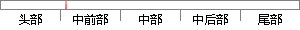

(1)监督式学习（Supervised Learning），常见算法有逻辑回归（Logistic Regression）和反向传递神经网络（Back Propagation Neural Network）；
片段位置图

相似结果|
相似片段 1：可以看到有监督学习的身影。常见算法有逻辑回归(Logistic Regression)和反向传递神经网络(Back PropagationNeural Network)。第二类学习模型是无监督学习，无监督学习中训练集中的样本都是未进行标记的，并没有给出样本的具体所属类别，只是通过样本的训练来得出训练样本集中的结构性知识。
|
※ 片段修改建议 ※
近似词参考：- 监督：监视
- 学习：进修
- 传递：通报
系统自动生成语句：(1)监视式进修（Supervised Learning），常见算法有逻辑回归（Logistic Regression）和反向通报神经网络（Back Propagation Neural Network）；
注：本片段修改建议为系统自动生成，仅供参考。